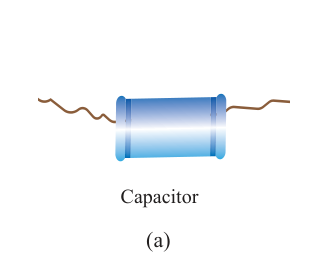
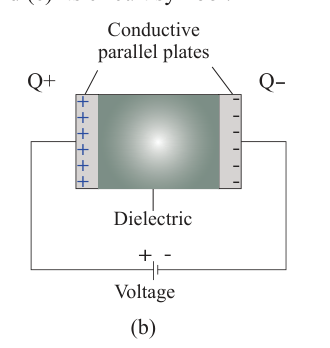
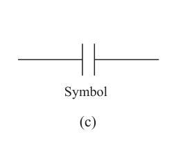
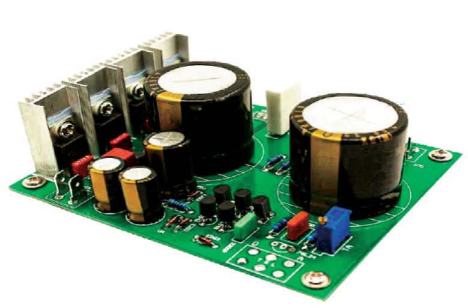

charged negatively, and the other plate positively. The charge continues to accumulate on the plates with time until the capacitor is fully charged. Figure 1.26 (a) shows a capacitor, (b) its structure and (c) its circuit symbol.



Figure 1.26: Capacitor and its symbol
Capacitors are used as parts of electrical circuits in many common electrical devices. They store energy in the electrostatic field created by the electric charges on their plates. Consider electric devices like the radio or stereo system; the power lamp fades out slowly when power is switched off. On the other hand, the stereo system has its sound playing for some seconds after the power is switched off. This is because capacitors store electrical energy, and, as a result, the electronic appliances then continue being supplied with it. Capacitors are used in computers, televisions and other electronic circuits. Figure 1.27 shows mounted capacitors in a radio circuit board.
A fully charged capacitor has a positive charge on one plate and an equal amount of negative charge on the other. The potential difference between the capacitor plates is measured by connecting a voltmeter across them.

Capacitance
When more charges are added to the capacitor, the value of its positive and negative potential rises. Why does this happen? The reason is that the increased charge repels any incoming charge more strongly than before. Thus, more work has to be done to increase the charge on the capacitor. A measure of the amount of charge the capacitor (or any conductor)